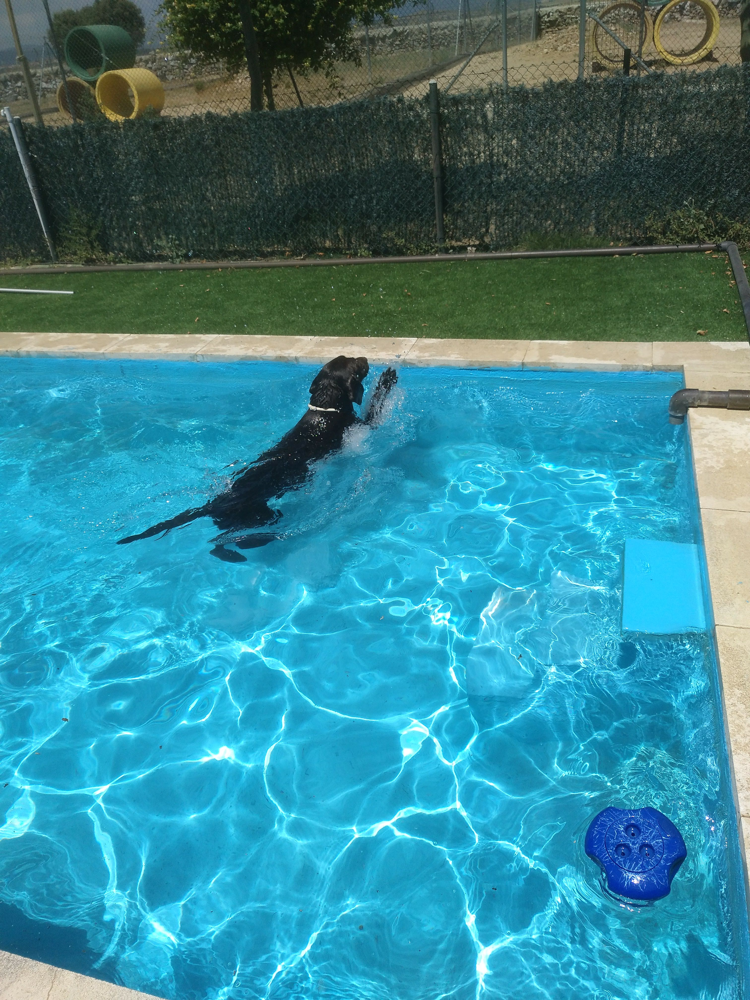

Cuidado personalizado
La rutina diaria se adapta al perro, no al revés. Se trabaja según edad, hábitos, comportamiento y necesidades específicas.
Residencia canina



Colmenar Viejo, Madrid
SierraCan
Residencia canina, adiestramiento, piscina, atención veterinaria y un entorno amplio pensado para que cada estancia sea estable, segura y tranquila.
Nuestra filosofía de cuidado
SierraCan plantea la residencia desde la observación y el cuidado individual. La prioridad no es alojar perros en serie, sino adaptar la estancia a cómo vive cada uno: edad, energía, comportamiento, alimentación y gestión del estrés.
La rutina diaria se adapta al perro, no al revés. Se trabaja según edad, hábitos, comportamiento y necesidades específicas.
Antes de una estancia larga se favorece la familiarización con el centro y, durante la residencia, se prioriza el recreo y la estabilidad.
El servicio cubre tanto viajes o necesidades puntuales como soluciones de larga duración para perros que requieren un hogar estable.
Qué incluye la residencia canina
Cobertura para urgencias, administración de medicación pautada y apoyo de clínicas de Colmenar Viejo y alrededores.
Un servicio adicional para que el perro vuelva cuidado, limpio y cómodo al final de su estancia.
Perreras limpiadas con agua caliente y equipos de presión, con apoyo térmico en invierno para mantener estabilidad.
La dieta se ajusta a cada caso y se apoya en piensos de calidad, con especial atención a perros con pautas concretas.
Las instalaciones
El centro reúne perreras climatizadas, zonas de recreo independientes, pista de adiestramiento, área arbolada y piscina canina para uso recreativo y terapéutico.


Lo esencial del centro
Boxes de 6 m² con caseta térmica, aislamiento y recipientes individuales.
Zona de recreo y apoyo útil en rehabilitaciones postraumáticas y postoperatorias.
Áreas separadas para ajustar socialización, ejercicio y descanso sin mezclar dinámicas.
Nuestros profesionales expertos
Desde 1999, SierraCan ha desarrollado un modelo de residencia basado en experiencia, mejora continua y conocimiento real del comportamiento canino. La dirección del centro se apoya en una trayectoria larga, práctica y cercana.
“La residencia no debe ser una pausa incómoda para el perro, sino un lugar en el que pueda mantenerse estable, atendido y tranquilo.”
1999
inicio de la trayectoria del centro y del trabajo continuado con perros
25 €/día + IVA
tarifa base de residencia. Más de un perro y estancias largas, consultar.
24 h
respuesta veterinaria para urgencias durante la estancia
Experiencias SierraCan
Tranquilidad
Familias que buscan dejar a su perro en un lugar donde el entorno y la rutina no disparen estrés innecesario.
Seguimiento
Estancias que requieren atención individual, medicación, control o periodos más largos de adaptación.
Repetición
Un centro al que se vuelve cuando la experiencia anterior fue estable, clara y bien atendida.
Contacto y visitas
La mejor forma de entender SierraCan es recorrerlo. Agenda una visita o llámanos para resolver disponibilidad, tipo de estancia, periodos largos o casos especiales.
Todos los servicios incluidos excepto peluquería. Ofertas según duración.
Carretera M-104 Colmenar - San Agustín de Guadalix pk 12,100. Colmenar Viejo.
Lunes a viernes: 10:00-13:00 / 17:00-19:00. Sábados: 10:00-13:00.
Horario de verano 15/6 al 15/9: lunes a viernes 09:00-13:00 / 18:30-20:30. Sábados tarde, domingos y festivos cerrado.
Ampliar mapa